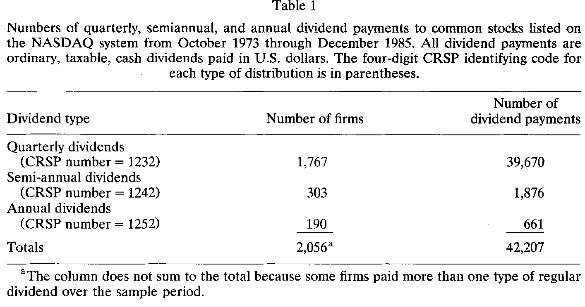
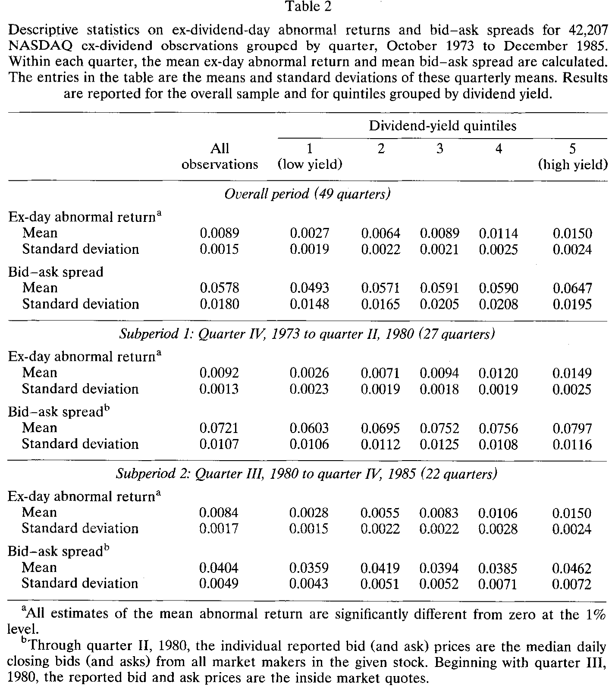
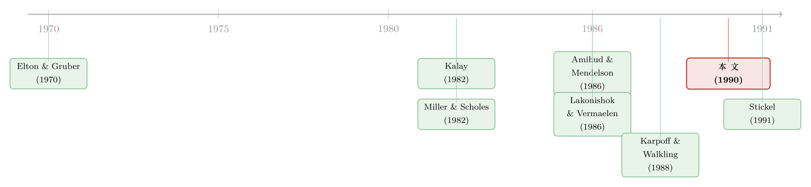

买在除息前，卖在除息后：一桩把「税」和「价差」搅在一起的把戏
本文读的是 Karpoff & Walkling (1990, Journal of Financial Economics)：在 NASDAQ 股票上，除息日 (ex-dividend day) 的异常收益与买卖价差 (bid-ask spread) 显著正相关，这种相关性随股利收益率分位单调增强、在高收益率股票里最强、且只出现在除息日而非普通交易日——这说明「股利捕获」(dividend capture) 交易确实在左右一部分股票的除息日定价，除息日收益并不只是税率的影子。
1 引言：一笔几乎「白捡」的钱
先讲一个华尔街上一度公开的把戏。
一只股票马上要除息了，每股派 1 美元股利。你在除息前一天（cum-dividend，含息）买进，过几天在除息后（ex-dividend，除息）卖出。理论上，除息那一刻股价会大致下跌一个股利的金额，所以你「左手赚了股利、右手亏了股价」，一进一出应该不赚不赔。
可如果你是一家应税公司 (taxable corporation) 呢？故事就完全变了。按当时的美国税法，公司收到的股利里有 70%（1986 年前甚至是 85%）可以从应税收入中扣除——也就是说，同样一块钱，股利收入比资本利得「更值钱」。于是「买进收息、卖出认亏」对一家公司而言可能是净赚的。媒体当年把这件事报道得沸沸扬扬，称之为「华尔街最火的游戏」[Laderman (1985)]。
这就是 股利捕获 (dividend capture)：买在除息前、卖在除息后，专程去「捕获」那一笔税收上更划算的股利。
接着，一个自然的问题是：如果真有人在大规模地玩这个把戏，它会在数据里留下什么痕迹？这正是 Karpoff 和 Walkling 想回答的。而他们给出的答案，巧妙地把两个看似无关的东西——税和买卖价差——拧在了一起。
2 除息日收益之谜：一个被「税」垄断了二十年的解释
要理解这篇论文的张力，得先知道它在跟谁较劲。
一个被反复证实的经验事实是：除息日的股价跌幅小于股利金额，换算成收益，除息日的平均异常收益是正的。为什么？自 Elton 和 Gruber (1970) 起，主流解释是 税收惩罚假说 (tax-penalty hypothesis)：对长期投资者而言，股利按个人所得税率 \(t_{jp}\) 征税，资本利得按更低的 \(t_{jg}\) 征税，所以「少分一块股利、多留一块股价」对他更划算，于是均衡里股价跌得不到一个股利那么多。
把这件事写成方程。设长期的「投资者」(investor) 是边际卖方，他在除息前卖（含息价 \(p_{jb}\)）与除息后卖（除息价 \(p_{ja}\)、并领到股利 \(d_j\)）之间无差异，则税后收益相等：
$$p_{jb} - (p_{jb}-p_{jo})t_{jg} = p_{ja} - (p_{ja}-p_{jo})t_{jg} + d_j(1-t_{jp})$$
其中 \(p_{jo}\) 是原始买入价。定义观察到的除息日收益 \(r_j = (p_{ja}-p_{jb}+d_j)/p_{jb}\)，整理上式（两边的 \((p_{jo})t_{jg}\) 抵消，提出 \((1-t_{jg})\)），就得到税收惩罚假说下的均衡收益：
$$R_{rj} = \frac{d_j}{p_{jb}}\cdot\frac{t_{jp}-t_{jg}}{1-t_{jg}}$$
只要 \(t_{jp} > t_{jg}\)（历史上对多数应税长期投资者确实如此），\(R_{rj}>0\)——除息日收益为正，且它反映的是边际投资者的税率。
二十年里，这条逻辑几乎垄断了对除息日收益的讨论。但它有个尴尬：Hess (1982) 发现，即便是股利收益率相近的股票，隐含的「税率」也千差万别；税收无法独力解释除息日收益的全部横截面差异。缺的那块拼图是什么？
Karpoff 和 Walkling 的答案是：股利捕获交易。
2.1 把第二种交易者请进模型
现在引入第二类市场参与者——股利捕获交易者 (dividend-capture trader)。文献和媒体都指出，真正在玩这个把戏的，要么是应税公司，要么是证券交易商 (dealer)。
先看公司。一家边际税率为 \(t_c\)、只对 30% 股利收入纳税（即可扣除 70%）的公司，含息买进、除息卖出能不能赚钱，取决于一个不等式。它「买进收息再卖出」的税后所得，必须盖过它的双向交易成本与持有成本，否则无利可图：
$$p_{ja} + d_j(1-0.3t_c) - p_{jb} + (p_{jb}-p_{ja})t_c \ge 2x_{cj}(1-t_c)p_j + h_j$$
这里 \(x_{cj}\) 是公司单向交易成本占股价的比例，\(p_j=(p_{ja}+p_{jb})/2\)，\(h_j\) 是持有（含对冲）成本。把它整理成对除息日收益 \(r_j\) 的上界，就是方程 (4)：
$$r_j \le \frac{2x_{cj}p_j - 0.7\, d_j t_c}{p_{jb}(1-t_c)} + \frac{h_j}{p_{jb}} \equiv R_{cj}$$
留意 \(R_{cj}\) 的「风险」一面：正如 Heath 和 Jarrow (1988) 指出的，真实的除息价跌幅是不确定的，短期捕获是有风险的；尤其公司要享受 70% 扣除，必须持有至少 46 天，这段时间的对冲与裸头寸成本，全压在 \(h_j\) 里。
同样地，一个对股利和资本利得都按 \(t_d\) 征税的交易商，其无利可图条件给出更干净的上界，方程 (6)：
$$r_j \le \frac{2x_{dj}p_j}{p_{jb}} \equiv R_{Dj}$$
不同于 \(R_{cj}\) 可能为负，\(R_{Dj}\) 只要交易有成本就恒正。
2.2 全文的「核心方程」
但真正关键的一步在于：把税收惩罚的长期投资者和两类股利捕获者放进同一个均衡。谁的约束最紧，谁就决定了除息日收益。于是有了这篇论文的核心方程 (7)：
这个 \(\min\) 把整篇论文的逻辑一口气讲完了。如果 \(\min(R_{rj},R_{cj},R_{Dj})=R_{rj}\)，说明股利捕获太贵、根本不划算，除息日收益由税率说了算，回到老故事；可一旦 \(R_{rj} > \min(R_{cj},R_{Dj})\)，股利捕获交易者就把除息日收益往下压到自己的成本线上。而方程 (4)、(6) 都告诉我们，\(R_{cj}\)、\(R_{Dj}\) 都随交易成本递增。
于是第一条可检验的含义浮出水面：
(含义一) 在满足 \(R_{rj} > \min(R_{cj}, R_{Dj})\) 的派息股里，除息日收益与交易成本正相关。
然后，再对 \(R_{cj}\) 关于股利 \(d_j\) 求导，可以证明：只要持有成本相对股利不太离谱，
$$\frac{h_j}{d_j} < 0.7\, t_c + (1-t_c)\,x_{cj}$$
（举例：\(t_c=0.34\)、\(x_{cj}=0.005\) 时，这个条件就是 \(h_j/d_j < 0.2413\)），高股利股票就更可能吸引股利捕获。于是第二条含义：
(含义二) 除息日收益与交易成本的横截面相关性，在高股利收益率组里比在低股利组里更强。
到这里，模型的活儿就干完了。剩下的，是怎么把它逼到数据面前。
3 识别策略：把「流动性」从「股利捕获」里减掉
这篇论文最该被细读的，是它的识别。因为「收益和交易成本正相关」这件事，并不是股利捕获的专利。
一个强劲的对手叫 Amihud 和 Mendelson (1986)：他们论证，流动性差的股票要给投资者更高的补偿，于是所有交易日上，收益都和买卖价差正相关——这是一种流动性溢价的「客户群效应」(clientele effect)，跟除息、跟税收毫无关系。（关于价差与预期收益的这条经典关系，可参见《想买走一家公司千分之一的股票，得把价格推高百分之一》。）
那么怎么把股利捕获和这种「一般性的流动性溢价」分开？作者用了三招，沿用并改良自 Karpoff and Walkling (1988) 的四步法。
第一招：用「异常收益」而非原始收益。 先对每只股票每季度估一个单因子市场模型，
$$r_{jt} = \gamma_{0jq} + \gamma_{1jq}r_{mt} + v_{jt},\qquad t=-240,\dots,-41$$
再算除息日的异常收益（方程 9）：
$$\varepsilon_{jq} = r_{j0} - \hat\gamma_{0jq} - \hat\gamma_{1jq}r_{m0}$$
关键在于：流动性对原始收益的任何「一般性」影响，平均而言会被市场模型的截距 \(\gamma_{0jq}\) 吸收掉。所以当我们再做横截面回归（方程 10），
$$\varepsilon_{jq} = a_q + b_q\, SPREAD_{jq} + u_{jq}$$
里头的 \(b_q\) 度量的，就是净掉一般流动性之后、买卖价差与除息日异常收益的相关。
第二招：把时间序列平均起来做检验。 把 \(n\) 个季度的 \(b_q\) 平均（方程 11）：
$$\bar b = \frac{1}{n}\sum_{q=1}^{n} b_q$$
零假设 \(H_0:\ b=0\)，备择 \(H_1:\ b>0\)；检验统计量服从 \(t\) 分布。这种「先季度截面、再时序平均」的 Fama–MacBeth 式做法，绕开了同一天多只股票除息带来的横截面相关问题——因为每个 \(\hat b_q\) 是无偏的，其时序的均值和标准误也就是无偏的。作者还补了一个分布假设更弱的二项检验：零假设下应有一半的 \(\hat b_q\) 为正。
第三招，也是最漂亮的一招：做安慰剂。 如果是股利捕获在起作用，那么价差和收益的正相关应该只出现在除息日；如果是 Amihud–Mendelson 的一般流动性效应，那它在普通交易日也该出现。作者于是在一组非除息日上重做同样的回归——结果，相关性消失了。这一对照，几乎是把「流动性溢价」这个对手按在桌上单独称了一次重。
买卖价差本身用 CRSP 提供的收盘买卖报价，按 $-40$ 到 $-11$ 日的均值估计：
$$SPREAD_{jq} = \frac{1}{q_t}\sum_{t=-40}^{-11}\frac{2(A_{jqt}-B_{jqt})}{A_{jqt}+B_{jqt}}$$
4 数据：为什么非得是 NASDAQ？
这就引出一个看似技术、实则要害的选择：为什么用 NASDAQ，而不是更「高大上」的纽约证券交易所？
因为之前 Karpoff 和 Walkling (1988) 用 NYSE/AMEX 数据、Stickel (1991) 用优先股数据时，都被迫使用交易成本的弱代理，结果有的代理和除息日收益正相关、有的不相关，证据飘忽。而 CRSP 的 NASDAQ 磁带恰恰直接记录了交易成本里最关键的一块——买卖价差，覆盖大量证券、跨越很长时间。换句话说，作者是为了「检验功效 (power)」而专程来 NASDAQ 的。
样本上，从 1973 年 1 月到 1985 年 12 月，磁带上识别出 53,205 笔普通、应税、现金股利。经过一系列筛选（至少 60 个收益观测估市场模型、至少 20 天估价差、至少 5 天估股利收益率，剔除只派过一次股利的公司、剔除除息窗口内有拆股的样本），最终样本是 42,207 笔现金股利、2,056 家公司、49 个季度（1973 年 10 月至 1985 年 12 月）。

Table 1
由于 CRSP 报价口径在 1980 年 7 月从「所有做市商的中位数报价」改为「最优买卖报价 (inside quotes)」，作者把全样本拆成两个子期分别汇报：1973 年 10 月–1980 年 6 月，与 1980 年 7 月–1985 年 12 月。
5 主要结果：除息日的那一笔正收益，是有人在「捕获」
先看描述统计。全样本的除息日平均异常收益是 0.89%，在 1% 水平上显著异于零——长期以来在上市股票里观察到的「除息日正收益」，在 NASDAQ 上同样成立。这个均值从第一子期的 0.92% 略降到第二子期的 0.84%（两者之差的 \(t\) 值为 1.65），与 Eades, Hess and Kim (1984) 在上市股票里看到的长期下行趋势一致。更要紧的是：当样本按股利收益率分成五分位时，除息日收益随股利收益率单调上升。

Table 2
但描述统计只是开胃菜。真正的核心检验，是那个净掉一般流动性后的价差系数 \(\bar b\)。结论是斩钉截铁的三句话：
- 第一，除息日异常收益与买卖价差显著正相关。 这个相关，比 Karpoff 和 Walkling 此前在 NYSE/AMEX 普通股、或 Stickel 在优先股里找到的任何相关，都更高、更显著——正如「来 NASDAQ 是为了功效」所预期的。
- 第二，相关性随股利收益率分位增强，许多情形下单调递增。 这正是含义二：高股利股票更值得捕获，于是那里的「价差—收益」关系最紧。
- 第三，安慰剂干净利落。 在非除息日的对照样本里，这种相关性不出现。也就是说，在派息股之中，价差与收益的正相关只在除息日现身——这把 Amihud–Mendelson 的一般流动性解释排除在外。
把三句话连起来：除息日那一笔正收益，至少在一部分股票（尤其高股利股票）上，是被股利捕获交易者的交易成本顶在那里的，而不是单纯的边际投资者税率。这就回到了方程 (7) 的 \(\min\)：在这些股票上，约束最紧的不是 \(R_{rj}\)，而是 \(R_{cj}\) 或 \(R_{Dj}\)。
它的几个延伸含义同样重要。其一，对这些股票，除息日收益反映的是边际交易者的交易成本，而非其税率——这直接动摇了「除息日收益只看税率」的旧论断。其二，作者论证：当除息日收益为正、又存在股利捕获时，除息日收益就会受股利收入个人税待遇的影响，这与 Miller and Scholes (1982) 「除息日收益对税制变化无动于衷」的主张相左。其三，股利捕获能顺带解释一批旧异象：除息日附近成交量上升（尤其高股利股票，Lakonishok and Vermaelen (1986)）、1984 年税改抬高捕获成本后高股利股票除息日收益变大（Grammatikos (1989)）。
6 文献脉络：从「税率」到「交易成本」的一次重心转移
把这条线捋一遍，会看到一次清晰的重心转移。
最早，Elton and Gruber (1970) 与 Brennan (1970) 立起了税收惩罚/客户群的框架：除息日收益是边际投资者税率的镜子。Kalay (1982, 1984) 紧接着提出，短期套利者的存在会给除息日收益设上一道交易成本的上下界——这是把「成本」请进除息日故事的第一步。随后 Miller and Scholes (1982) 与 Lakonishok and Vermaelen (1983, 1986) 各执一端：前者坚持除息日收益对税制变化稳健，后者用成交量证据指向税收诱导的短期交易。

与此同时，另一条看似无关的支流——Amihud and Mendelson (1986) 的流动性溢价——为「收益和价差正相关」提供了一个税收之外的解释。这恰恰成了本文必须正面回应的竞争假说。
本文 (Karpoff and Walkling, 1990) 站在 Kalay 的成本约束之上，把 \(R_{rj}\)、\(R_{cj}\)、\(R_{Dj}\) 统一进一个 \(\min\)，又用 NASDAQ 的买卖价差数据和「除息日 vs. 非除息日」的对照设计，第一次给股利捕获找到了高功效且能排除流动性混淆的证据。它和作者自己的 Karpoff and Walkling (1988)、以及随后的 Stickel (1991) 一道，把除息日研究的重心从「税率」推向了「交易成本」。多年以后，当报价单位从八分之一美元缩到一美分，人们还会回到这条线上追问：那点除息日异象，究竟有多少是「成本」给的？（顺着这条线，可参见《「差一点」的除息日：把 tick 缩到一美分，异象为什么还在？》，以及关于个人税如何渗进股价的《个人税，悄悄定价了你的股票》。）
评论与延伸（Q&A + 研究方向）
(a) 几个可能的疑问
Q：买卖价差只是「交易成本」的一部分，用它当代理可靠吗？
作者承认这是个假设，但论证它不算苛刻。Stoll and Whaley (1983) 报告组合价差与佣金的相关高达 0.996；Stoll (1989) 指出价差里的存货成本与订单处理成本是其相对固定的比例。我们真正需要的只是「价差的横截面差异，是捕获者交易成本横截面差异的好代理」——这比要求价差等于真实成本弱得多。
Q：除息日收益和价差正相关，凭什么就是股利捕获，而不是 Amihud–Mendelson 的流动性溢价？
这正是识别的命门，也是论文最硬的一招。两种机制的可证伪差异在于：流动性溢价在所有交易日都该出现，股利捕获只在除息日出现。作者在非除息日的对照样本里重做回归，相关性消失——一般流动性解释因此被排除。
Q：为什么相关性在高股利股票里最强？这难道不是「机械的」？
不是机械的，而是模型的预测（含义二）。对 \(R_{cj}\) 关于股利求导可证：满足 \(h_j/d_j < 0.7t_c+(1-t_c)x_{cj}\) 时，股利越高、公司捕获的净收益越大，越可能吸引捕获者，于是高股利组里「价差—收益」关系更紧。是经济机制，不是恒等式。
Q：那除息日收益到底反映税率，还是交易成本？
看方程 (7) 的 \(\min\) 由谁决定。在捕获不划算的股票上（\(\min=R_{rj}\)），收益反映边际投资者税率，旧故事成立；在捕获活跃的股票上（\(\min=R_{cj}\) 或 \(R_{Dj}\)），收益被顶在捕获者的成本线上，反映的是交易成本。两者并存，而非互斥。
Q：样本停在 1985 年，会不会过时？
这是有意为之。1986 年税改让股利与资本利得名义税率拉平，1984 年税改又改了公司的持有期与扣除比例；日本寿险公司在 1980 年代末也一度成为边际短期交易者。把样本截在 1985 年底，正是为了让「公司与交易商捕获」这个机制保持干净、不被后续制度变化污染。
Q：除息日均值从 0.92% 降到 0.84%，是不是说捕获在减弱？
论文没有把这点强解读为捕获减弱——两子期之差的 \(t\) 值仅 1.65，且这种长期下行在上市股票里早有记录 (Eades, Hess and Kim, 1984)。更稳妥的读法是：报价口径变化（中位数报价→最优报价）本身就会影响测得的价差与收益，这也是作者分子期汇报的原因。
(b) 几个可能的研究问题与提案
1. 把同样的识别搬到公司债的「除息日」上。 【经济故事】公司债同样付息，且持有人以应税机构、交易商为主；若存在「票息捕获」，付息日附近的异常收益也应与债券的买卖价差/流动性正相关，并在高票息债里更强。 【可行性】中。TRACE 提供成交与价差，付息日已知；难点在于公司债成交稀疏、价差度量噪声大，需要用规模自适应的流动性度量。识别可照搬「付息日 vs. 非付息日」的对照设计。
2. 外资持有人是不是另一类「捕获者」？ 【经济故事】不同国家对股利/资本利得的税收待遇不同（正文已提到 1980 年代末日本寿险公司的特殊动机）。跨境投资者可能在某些股票的除息日扮演边际交易者，把除息日收益顶到他们的（含汇率对冲的）成本线上。 【可行性】中。需要带国别的持仓/成交数据（如某些市场的外资板或托管层数据），识别上可比较外资持股高/低的股票在除息日的「价差—收益」斜率差异。
3. 报价单位与交易制度变迁下的「捕获带宽」。 【经济故事】方程 (4)、(6) 把收益上界直接写成交易成本的函数。十进制化、做市商竞争、电子化都压低了 \(x\)，理论上应当压低除息日收益、并削弱其与价差的相关。 【可行性】高。十进制化、Reg NMS 等是干净的时间断点，CRSP/TAQ 数据齐备，可用双重差分 (difference-in-differences, DiD) 估制度变迁对「除息日价差系数」的影响。
4. 持有成本 \(h_j\) 的直接度量。 【经济故事】模型里 \(h_j\)（对冲与裸头寸成本）是个黑箱，却决定了谁会去捕获、条件 (8) 是否成立。若能用期权对冲成本、个股波动率、借券成本去逼近 \(h_j\)，可以更结构化地检验捕获的边界。 【可行性】中。期权数据（如 OptionMetrics）与借券费率可得，但样本期要往后挪，机制可能已被制度变化改写——要诚实对待外部有效性。
参考文献
- Amihud, Y., & Mendelson, H. (1986). Asset pricing and the bid-asked spread. Journal of Financial Economics 17, 223–249.
- Brennan, M. J. (1970). Taxes, market valuation and corporate financial policy. National Tax Journal 23, 417–421.
- Eades, K. M., Hess, P. J., & Kim, E. H. (1984). On interpreting security returns during the ex-dividend period. Journal of Financial Economics 13, 3–34.
- Elton, E. J., & Gruber, M. J. (1970). Marginal stockholder tax rates and the clientele effect. Review of Economics and Statistics 52, 68–74.
- Grammatikos, T. (1989). Dividend stripping, risk exposure, and the effect of the 1984 tax reform act on ex-dividend day behavior. Journal of Business 62, 157–173.
- Heath, D. C., & Jarrow, R. A. (1988). Ex-dividend stock price behavior and arbitrage opportunities. Journal of Business 61, 95–108.
- Hess, P. J. (1982). The ex-dividend day behavior of stock returns: Further evidence on tax effects. Journal of Finance 37, 445–456.
- Kalay, A. (1982). The ex-dividend day behavior of stock prices: A re-examination of the clientele effect. Journal of Finance 37, 1059–1086.
- Karpoff, J. M., & Walkling, R. A. (1988). Short term trading around ex-dividend days: Additional evidence. Journal of Financial Economics 21, 291–298.
- Lakonishok, J., & Vermaelen, T. (1986). Tax-induced trading around ex-dividend days. Journal of Financial Economics 16, 287–319.
- Litzenberger, R. H., & Ramaswamy, K. (1982). The effects of dividends on common stock prices: Tax effects or information effects? Journal of Finance 37, 429–443.
- Miller, M., & Scholes, M. (1982). Dividends and taxes: Some empirical evidence. Journal of Political Economy 90, 1118–1141.
- Stickel, S. (1991). The ex-dividend day behavior of nonconvertible preferred stock returns and trading volume. Journal of Financial and Quantitative Analysis 26, 45–61.
- Stoll, H. R. (1989). Inferring the components of the bid-ask spread: Theory and empirical tests. Journal of Finance 44, 115–134.
- Stoll, H. R., & Whaley, R. E. (1983). Transaction costs and the small firm effect. Journal of Financial Economics 12, 57–79.